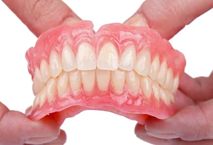
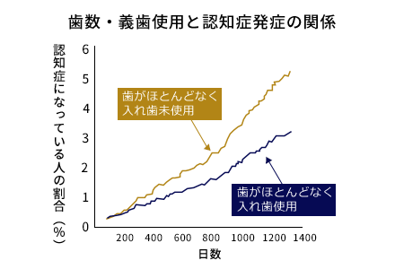
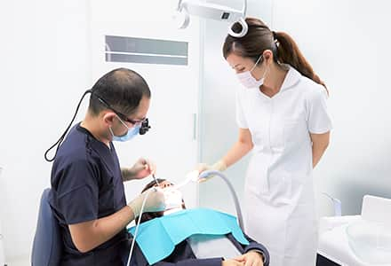
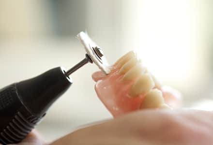

長期的に快適に使う精密義歯（入れ歯）
歯が無くなったり欠けてしまったりした際に行う歯を補う治療は、インプラント以外にも様々な治療方法があります。中でもお口の状態を診た上できちんと設計した入れ歯（精密義歯）は、自分自身で噛める力、つまり咀嚼機能を回復することが可能ですので、入れ歯次第で健康長寿へと繋がると当院では考えています。
藤沢の歯医者、玉木歯科医院では患者様一人ひとりのお口の状態をしっかりと把握し、噛める精密義歯をご提供いたします。
合わない入れ歯のリスク

入れ歯を装着されている方は、よく噛めない・義歯が動く・歯肉に当たって痛い・見た目が悪い・義歯を支えている歯がグラグラしてきたなど、様々な悩みをお持ちです。合わない入れ歯は、噛み合わせが悪いせいでストレスを感じるだけでなく、肩こりや頭痛など全身にも影響を与えてしまいます。
お口の中の環境は常に変化するため、一度作った入れ歯を長期に渡って快適に使うことは難しいですが、入れ歯製作の際、きちんとルールを遵守し、工程を工夫すれば、より快適に長く使用でき、かつよく噛める入れ歯を作ることが可能です。
歯を失い入れ歯を入れずにいると、様々なリスクが上昇

歯を失ったまま入れ歯を入れず放置していると、噛むという動作が少なくなってしまうため認知症にかかりやすくなります。高齢者を対象に行った3～4年間の追跡調査によると、自分の歯が多く残っている人や、歯が少なくても入れ歯などで咀嚼機能を補っている人は、歯が少ない人や歯を抜けたまま放置している人に比べて、認知症を発症するリスクが低いということが分かりました。歯がないまま放置している場合、入れ歯により咀嚼機能を補っている人よりも、最大1.9倍認知症にかかるリスクが高いのです。
マウスプレパレーション（前処理）の重要性

当院では、入れ歯を可能な限り長期間快適に使用していただけるよう、マウスプレパレーション（前処置）を徹底しております。入れ歯の出し入れの際や食事の際（咀嚼）に、入れ歯を引き抜く力やバネによる横方向への力などで外傷を受けてしまう場合があります。それを防ぐため、入れ歯の着脱方向を規制したり、入れ歯のバネがかかる歯の形を整えスペースを確保したり、かみ合わせの調整など、症例に応じて歯肉や顎骨の形の修正などを行います。
この前処置を十分に施さずに装着された入れ歯は、残っている歯やその他の口腔組織に悪影響を及ぼし、歯の動揺や顎の骨の吸収を助長し、より一層お口に合わなくなってきてしまいます。残存歯の状態や、顎堤のコンディションを考慮した設計を行うことが重要です。
快適な入れ歯を作るための工夫
長期間噛み心地を安定させるためのこだわり

当院では、前述したマウスプレパレーション（前処置）を行っているように、設計に徹底的にこだわっています。特に、装着時に違和感が少なく、よく噛める精密義歯を作ることにはこだわりが強いです。
一般的には、プラスチックの既製人工歯が用いられていますが、当院では自由診療にてオーダーメイドのセラミック製の人工歯を用いています。さらに、精密な型採りを行い、それをもとに国内トップクラスの技術を持つ歯科技工士が製作しています。そのため、経年劣化が少なく、長期間安定した噛み合わせを保つことが可能です。
日本歯周病学会専門医・指導医による精密義歯治療
入れ歯が必要になる患者様の多くは、歯周病が原因で歯を失っているケースが多いです。歯周病は、歯周病原細菌による慢性的な感染症であり、お口の中の全体に起こる病気です。もし歯周病を放置したまま入れ歯を入れてしまうと、しっかと噛めなくなってしまうなど、合わない入れ歯になってしまいます。
当院では、日本歯周病学会専門医・指導医が口腔内環境の改善、歯周病のコントロールを行った上で、適切な精密義歯（入れ歯）をご提供しています。
料金表
| 金属床局部床義歯 | ¥220,000～ |
|---|---|
| 金属床全部床義歯 | ¥330,000～ |
| カスタム人工歯 | ¥88,000～/本 |
| コーヌス内冠 | ¥88,000～/本 |
※すべて税込